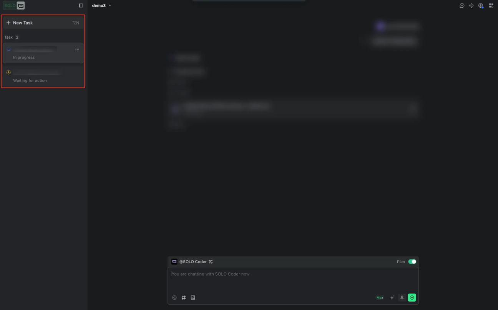

Overview
Multitasking breaks the limitations of traditional serial task execution, supporting the management of multiple tasks simultaneously within a single project, and enhancing overall development efficiency.
Use Cases
Simultaneously Conduct Chat and Development
You can freely switch between different tasks. For example, you can focus on Supabase module development while asking additional questions (such as "Supabase configuration methods"). This approach prevents both your and AI's thinking flow from being confined to a single chat.
Execute Multiple Development Tasks in Parallel
You can create multiple independent tasks within the same project, each dedicated to the development of different functional modules (such as frontend and backend), enabling parallel advancement of multiple tasks.
UI
The task panel is located on the left side of the SOLO interface and displays all tasks in the current project as well as the status of each task.

Use the task panel to quickly switch between active tasks, track progress, and manage your development workflow efficiently.
Related Operations
Create New Tasks
Create new tasks in the following ways:
- Task Panel Button - Click the New Task button at the top of the task panel
- Chat Panel Button - Click the New Task icon in the upper-right corner of the AI chat panel
Rename or Delete Tasks
Click the ··· button in the upper-right corner of the task card, select the desired option from the menu, and complete the required operation.
Hide or Show the Task Panel
After entering SOLO mode, the task panel is displayed by default. You can hide the task panel by clicking the Hide Tasks icon in the upper right corner of the panel. After hiding, it can be reopened using the Show Tasks button.
Use multitasking to keep your development context organized. Switch between feature work, bug fixes, and documentation without losing progress on any task.